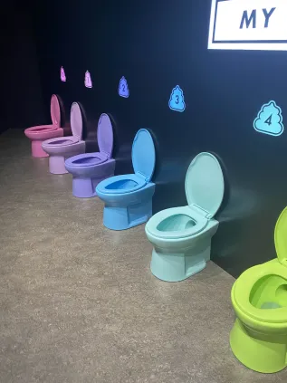
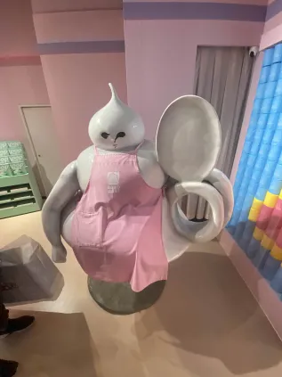

Laborers and Sanitation Workers go on strike as a result of newly acclaimed Biopod Technology
By Judy Chavez
No doubt those of you who are currently reading are familiar with the recent invention of Biopods from the People's Output Organisation and how it finally serves to rid the world of the hyper fetishisation of fossil fuels that still persists not because of the benefits to environmental sustainability but the quote on quote almost "erotic" sound it produces that please a specific niche of hyper masculine men.

However as with every revolutionary invention that aids humanity, there will be met with an equal and opposite blacklash, must to reason why we still haven't figured out how to make a water reliant engine, but while the consensus of the government seems to be in favour of the integration of Biopods into our daily lives, the unions, specifically the state sanitation department is threatening to uphold month long strikes as they see this technology as a threat to their job security.

I would personally suggest that the masses and sanitation workers find a comprise such as paying them for the service of installation of the Biopod system as well as maintenance but I find this outcome to be unlikely due to human nature to always try and cut costs and to do tasks ourselves. In addition many households wouldn't need to instal any accessories and would simply only need to flush the biopod down into the septic tank where then it would work its magic. Then it would seem the only help they would need is in installing a pump to their septic tank in which I guess sanitation workers can aid with but i dont see how that is a repeatable process in the future that requires much maintenance.
Then it seems our only hope for our once unsung heroes would be to see how things unfold between the union and the state and like how society has for the past half a century, evolve with the times.Another personal suggestion would be for them to deligate with the organisation and see if there could be a passive fuel collection system to be installed with the general sewage system where the waste is more diluted but the sheer volume should be able to make up for it. This would at the very least secure a job with the organisation to my limited belief.